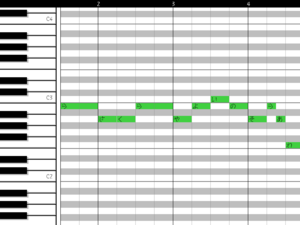
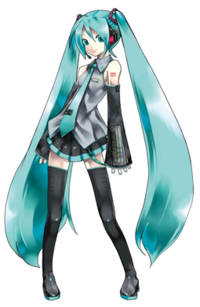
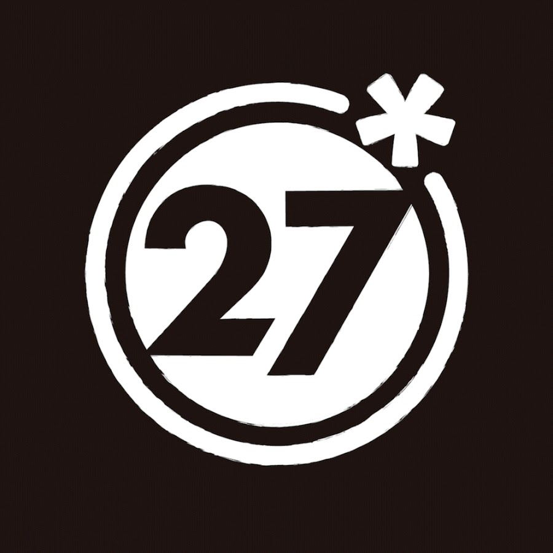

歡迎來到 Vocaloidimension ！
這是一個以帶領初心者
認識Vocaloid為目的所設立的網站
現在就透過上面的標籤
一步步踏入這個美妙的音樂世界吧！
 |
Vocaloid 簡稱 V家 |
初音未來 |
初音未來是其中最有名的角色 原型是Vocaloid 2中的聲音引擎「初音ミク」 「初音」是指「第一次的聲音」 「ミク」漢字寫作「未來」，指「VOCALOID所象徵的將來音樂之可能性」 角色形象由Crypton Future Media設計製作 在設定上是一名16歲的女性歌手 能夠駕馭各種音樂風格 她最有名的歌曲是改編自芬蘭民歌的《Ievan Polkka》 其形象在日本和世界各地都很受歡迎，在電視動畫、電玩等處都能看到她的身影 |
鏡音雙子 | 鏡音雙子也是出自Vocaloid 2 並由Crypton Future Media所設計的雙人角色 兩人分別是鏡音鈴(リン)和鏡音連(レン) 在官方設定中，並沒有明講兩人的關係 一般較大眾的設定有兄妹、姐弟和「 自己在鏡中反映出來的異性」等 由「惡之系列」、「囚人系列」以及「雪系列」所組成的「鏡音三大悲劇」為他們較著名的作品 其中所包含的故事也非常耐人尋味 |
巡音流歌 |
同樣出自Vocaloid 2及Crypton Future Media的設計 但相較於前兩位的青春活力 巡音流歌帶給人一種成熟及神祕的感覺 其日文全名為巡音ルカ 「巡」的意思是「遍布周圍的聲音（"巡り"伝わる音）」 「ル」漢字為「流」，表示歌曲的流動；「カ」漢字為「歌」意思為「歌曲的傳達」 「ダブルラリアット」是她目前在niconico上再生數最高的歌曲 另外與初音未來合唱，透過有點露骨的歌詞講述同性之愛的「magnet」也請務必要聽聽看! |
| 
DECO*27 |
DECO*27的音樂常會融合搖滾樂和電子音樂的元素 值得一提的是，在他的每張專輯中 都可以看見其不同的音樂風格 在那當中不變的是對演唱者聲音的調教及表達各種深刻愛情的歌詞 DECO*27最常為初音未來作詞曲 偶爾也會為Gumi或其他真實歌手創作 每首歌都令人忍不住一聽再聽 以下是兩首推薦的歌曲 |
DECO*27 - ヴァンパイア feat. 初音ミク |
DECO*27 - おじゃま虫 feat.初音ミク |
|
ピノキオピ |
ピノキオピー的曲子大多是電音及中毒向的風格 他的很多首歌曲都十分朗朗上口 去年一首帶有諷刺意味的新作《神っぽいな》更是在youtube上突破了5000萬觀看次數 除此之外，ピノキオピー也是一名作詞家和插畫家 很多他所上傳的歌曲 從作曲、作詞、插畫到動畫都是由他自己一人所完成 非常厲害 這裡推薦兩首他所創作的歌 |
ピノキオピー - 魔法少女とチョコレゐト feat. 初音ミク |
ピノキオピー - 愛されなくても君がいる feat. 初音ミク |